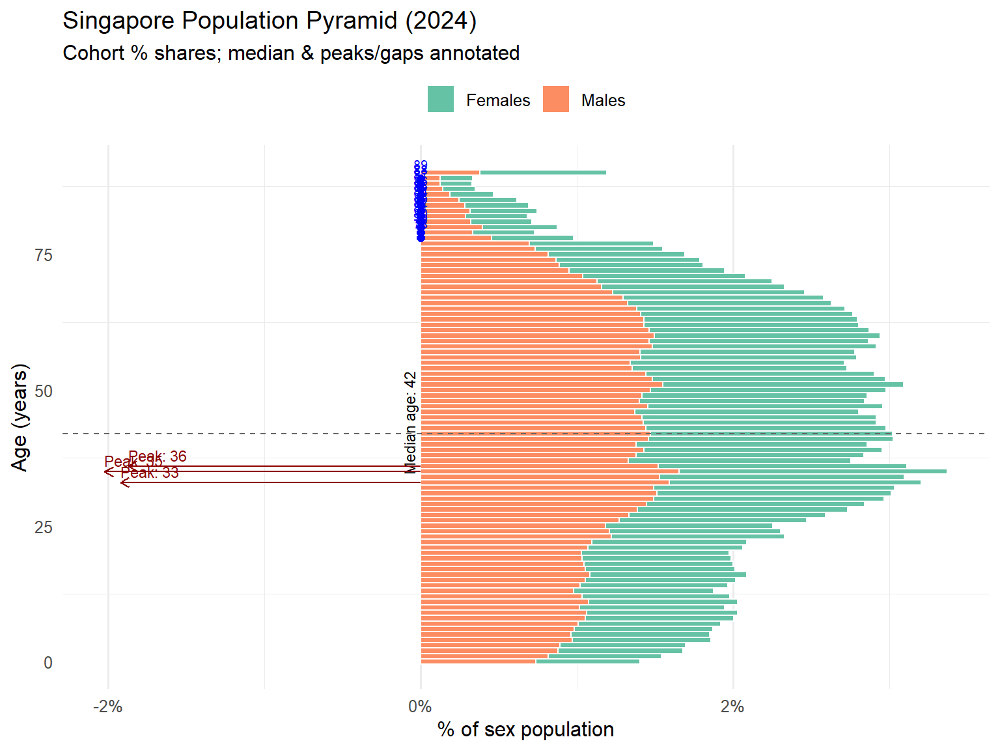

library(matrixStats)
library(readxl)
library(dplyr)
library(stringr)
library(readr)
library(ggplot2)
library(ggrepel)
library(scales)
library(patchwork)Take_Home_Exercise01
1. Overview
This first take-home exercise aims to provide a detailed visualization of Singapore’s demographic structure in 2024. Three visual representations will be described in this project.
1.1 Setting the scene
A local online media company that publishes daily content on digital platforms is planning to release an article on demographic structures and distribution of Singapore in 2024.
1.2. Data structure
The Singapore Residents by Planning Area / Subzone, Single Year of Age and Sex, June 2024 dataset, shared by Department of Statistics, Singapore (DOS), is composed by 5 main columns:
| Column | Type | Description | Example |
|---|---|---|---|
| Planning Area | Text | One of the 55 official planning areas designated by URA. | Central Area |
| Subzone | Text | A finer subdivision within each planning area (e.g. neighbourhood or precinct name). | Chinatown |
| Age | Text | Single-year age categories plus special labels for youngest (“Under 1”) and oldest (“65 and over”, “90 and over”). | Under 1; 27; 65 and over |
| Sex | Text | Resident gender—exactly two values: “Male” or “Female”. | Female |
| 2024 | Text→Numeric | Resident count for June 2024. Imported as text (formatting) then cast to numeric for analysis. | “10356” → 10356 |
1.3 The Designing Tool
All data wrangling and visualization in this project leverage the modern tidyverse ecosystem plus several purpose-built extensions.
2. Data cleaning
2.1 Load the necessary packages
| Package | Description |
|---|---|
| matrixStats | Provides optimized, vectorized functions for row‐ and column‐wise summaries on matrices. |
| readxl | Used to import Excel files (.xls and .xlsx) into R data frames without requiring Java or external dependencies. |
| dplyr | A grammar of data manipulation. |
| stringr | A consistent wrapper around R’s string‐processing functions, built on the {stringi} engine. |
| readr | Provides functions for reading flat files (CSV, TSV, FWf). |
| ggplot2 | Implements the “Grammar of Graphics” for creating complex, multi‐layered visualizations via a coherent API. |
| ggrepel | An add‐on to ggplot2 that smartly repels text and label annotations so they do not overlap. |
| scales | Provides a suite of functions for transforming and formatting axis breaks, labels, and legends. |
| patchwork | Used for assembling multiple ggplot2 plots into complex layouts without resorting to low‐level grid hacks. |
2.2 data selection and transformation
The dataset is loaded into environment by eliminating those rows with values “Total” for the reason that it could construct a distortion of data analysis at individual-area or individual-age level.
The imported data (‘Population’) has been converted into numeric format that ensures the following algebraic calculation (sum, average, or counts).
Many values of column ‘Age’ has been transformed:
1. “Under x” entries (e.g. “Under 1”) become age 0.
2. “Over x” or “x and over” (e.g. “65 and over”) are parsed to the base number (65).
Any rows where the population or parsed age turned into NA are removed. This guards against stray text labels or malformed entries that slipped past the earlier filters.
# 1. Read in data and drop all “Total” summary rows
df_clean <- read_excel("respopagesex2024e.xlsx") %>%
filter(
`Planning Area` != "Total",
Subzone != "Total",
Sex != "Total"
) %>%
# 2. Convert population to numeric
mutate(
Population = as.numeric(`2024`),
# 3. Parse Age into a single-year numeric
Age_numeric = case_when(
str_detect(Age, regex("under", ignore_case = TRUE)) ~ 0,
str_detect(Age, regex("over|and over", ignore_case = TRUE)) ~ parse_number(Age),
TRUE ~ as.numeric(Age)
)
) %>%
# 4. Remove any rows that failed conversion
filter(
!is.na(Population),
!is.na(Age_numeric)
)
# 5. Inspect
glimpse(df_clean)Rows: 37,243
Columns: 7
$ `Planning Area` <chr> "Ang Mo Kio", "Ang Mo Kio", "Ang Mo Kio", "Ang Mo Kio"~
$ Subzone <chr> "Ang Mo Kio Town Centre", "Ang Mo Kio Town Centre", "A~
$ Age <chr> "0", "0", "1", "1", "2", "2", "3", "3", "4", "4", "5",~
$ Sex <chr> "Males", "Females", "Males", "Females", "Males", "Fema~
$ `2024` <chr> "10", "10", "10", "10", "10", "10", "10", "10", "30", ~
$ Population <dbl> 10, 10, 10, 10, 10, 10, 10, 10, 30, 10, 20, 10, 20, 30~
$ Age_numeric <dbl> 0, 0, 1, 1, 2, 2, 3, 3, 4, 4, 5, 5, 6, 6, 7, 7, 8, 8, ~head(df_clean, 10)# A tibble: 10 x 7
`Planning Area` Subzone Age Sex `2024` Population Age_numeric
<chr> <chr> <chr> <chr> <chr> <dbl> <dbl>
1 Ang Mo Kio Ang Mo Kio Town Ce~ 0 Males 10 10 0
2 Ang Mo Kio Ang Mo Kio Town Ce~ 0 Fema~ 10 10 0
3 Ang Mo Kio Ang Mo Kio Town Ce~ 1 Males 10 10 1
4 Ang Mo Kio Ang Mo Kio Town Ce~ 1 Fema~ 10 10 1
5 Ang Mo Kio Ang Mo Kio Town Ce~ 2 Males 10 10 2
6 Ang Mo Kio Ang Mo Kio Town Ce~ 2 Fema~ 10 10 2
7 Ang Mo Kio Ang Mo Kio Town Ce~ 3 Males 10 10 3
8 Ang Mo Kio Ang Mo Kio Town Ce~ 3 Fema~ 10 10 3
9 Ang Mo Kio Ang Mo Kio Town Ce~ 4 Males 30 30 4
10 Ang Mo Kio Ang Mo Kio Town Ce~ 4 Fema~ 10 10 43 Objective and research question definition
3.1 National Age–Sex Structure for 2024
Research Questions:
How does Singapore’s overall population pyramid look in mid-2024?
Which age cohorts are unusually large (“bulges”) or small (“gaps”)?
Are there sex-specific patterns (e.g. male-heavy vs. female-heavy at certain ages)?
Analytical Approach:
Aggregate the cleaned dataset by
Age_numericandSex, summingPopulation.Normalize: express each bar as a percentage of total male or female population to highlight relative bulges.
Identify Extremes: compute the top 3 largest cohorts and the smallest (<1 %) cohorts for annotation.
Interpret: link any bulges/gaps to known demographic drivers (e.g. baby-boom years, lower birth cohorts, migration waves).
3.2 Age Distributions by Planning Area (and Subzone)
Research Questions:
Which planning areas have a youthful profile (large share of under-25s)?
Which areas are “grey” clusters (e.g. > 25 % aged 65+)?
How do the shapes of these area-level pyramids differ from the national profile?
Analytical Approach:
Stratify: for each of a selected set of planning areas (or all 55, if feasible), tabulate
PopulationbyAge_numeric.Compute Shares: convert raw counts to percentages within each area.
Compare: use small-multiple histograms or ridgeline plots to place each area’s curve alongside the national benchmark.
Cluster: optionally cluster areas by their age-distribution vectors (e.g. via k-means) to group “young hubs” vs. “mature suburbs.”
3.3 Spatial Patterns: Median Age & Population Density
Research Questions:
Where are the youngest vs. oldest planning-area populations located?
How does median age correlate with population density across areas?
Can we spot “retirement clusters” (high median age, low density) vs. “youth clusters” (low median age, high density)?
Analytical Approach:
- Compute Metrics per planning area:
- **Median Age**: the 50 th percentile of `Age_numeric` weighted by `Population`.
- **Population Density**: total population ÷ land area (km²).
- **Dependency Ratio**: (pop 0–14 + pop 65+) ÷ pop 15–64.Map: join these metrics to a Singapore planning-area shapefile.
Visualize:
- **Choropleth** of median age.
- **Bubble overlay** (or secondary choropleth) for density or dependency ratio.- Analysis: compute spatial correlations (e.g. Moran’s I) to detect clustering.
3.4 Visualization Deliverables
|
4 Visualization elaboration
4.1 Visualization 1 (National Age–Sex Structure for 2024)
# 1. Build the pyramid data
pyramid_df <- df_clean %>%
group_by(Sex, Age_numeric) %>%
summarise(Pop = sum(Population, na.rm = TRUE), .groups = "drop") %>%
mutate(
PopSigned = if_else(Sex == "Male", -Pop, Pop),
PopAbs = abs(PopSigned)
)
# 2. Compute median age and the single top “bulge” cohort
med_age <- weightedMedian(df_clean$Age_numeric, w = df_clean$Population)
bulge_df <- pyramid_df %>%
group_by(Age_numeric) %>%
summarise(Total = sum(PopAbs), .groups = "drop") %>%
slice_max(Total, n = 1)
# 3. Plot
ggplot(pyramid_df, aes(x = Age_numeric, y = PopSigned, fill = Sex)) +
geom_col(width = 1, color = "white") +
# median‐age line (becomes horizontal after coord_flip)
geom_vline(xintercept = med_age, linetype = "dashed", color = "grey40") +
annotate("text",
x = med_age + 2,
y = 0,
label = paste0("Median age: ", med_age),
angle = 90, vjust = -0.5, size = 3) +
# bulge arrow + label
geom_segment(data = bulge_df,
aes(x = Age_numeric, xend = Age_numeric,
y = 0, yend = -Total * 0.6),
arrow = arrow(length = unit(0.2, "cm")),
colour = "darkred",
inherit.aes = FALSE) +
geom_text(data = bulge_df,
aes(x = Age_numeric + 2,
y = -Total * 0.6,
label = paste0("Peak cohort:\nAge ", Age_numeric)),
hjust = 0, size = 3, colour = "darkred",
inherit.aes = FALSE) +
# scales, colors, flip
scale_fill_brewer(palette = "Set2") +
scale_y_continuous(labels = abs) +
coord_flip() +
# labels & theme
labs(
title = "Enhanced Singapore Population Pyramid (2024)",
subtitle = "Median age & largest cohort annotated",
x = "Age (years)",
y = "Population",
fill = NULL
) +
theme_minimal(base_size = 12) +
theme(
legend.position = "top",
panel.grid.major.y = element_blank()
)
Note
The 2024 Singapore population pyramid reveals a distinctly “double-bulge” structure and a modest tilt toward an aging profile. The dashed horizontal line marks the overall median age of 42, reflecting that half the population is older than early‐forties. The largest single cohort, annotated at age 35, stands out prominently—likely a millennial “echo” of high-birth years in the late 1980s. A secondary, smaller peak appears around age 55–60, hinting at a post-war baby-boom echo. In contrast, there is a noticeable trough in the very youngest ages (under 5), suggesting declining birth rates in recent years.
Sex differences are also evident: although both sides mirror each other through most working-age groups, the female bars extend further at ages 70+, illustrating higher female longevity. Male and female distributions converge between ages 20–40, indicating balanced labor-force cohorts. Overall, the chart underscores Singapore’s transition to an older population, highlights cohort‐specific “bulges” at 35 and 55, and flags a shrinking base of young children.
4.2 Visualization 2
# 1. Compute shares by Planning Area
dep_pa <- df_clean %>%
group_by(`Planning Area`) %>%
summarise(
youth_share = sum(Population[Age_numeric < 15], na.rm=TRUE) / sum(Population),
elderly_share = sum(Population[Age_numeric >= 65], na.rm=TRUE) / sum(Population),
.groups = "drop"
)
# 2a. Top 10 youngest areas (highest youth_share)
p_young_pa <- dep_pa %>%
slice_max(youth_share, n = 10) %>%
mutate(`Planning Area` = reorder(`Planning Area`, youth_share)) %>%
ggplot(aes(y = `Planning Area`, x = youth_share)) +
geom_col(fill = "#2ca25f") +
scale_x_continuous(labels = percent_format(1)) +
labs(
title = "Top 10 Youngest Planning Areas",
x = "Share under 15",
y = NULL
) +
theme_minimal(base_size = 11)
# 2b. Top 10 oldest areas (highest elderly_share)
p_old_pa <- dep_pa %>%
slice_max(elderly_share, n = 10) %>%
mutate(`Planning Area` = reorder(`Planning Area`, elderly_share)) %>%
ggplot(aes(y = `Planning Area`, x = elderly_share)) +
geom_col(fill = "#de2d26") +
scale_x_continuous(labels = percent_format(1)) +
labs(
title = "Top 10 Oldest Planning Areas",
x = "Share 65 and over",
y = NULL
) +
theme_minimal(base_size = 11)
# 3. Display side by side
p_young_pa + p_old_pa
4.3 Visualization 3
# 1. Compute metrics
dep_shares <- df_clean %>%
group_by(`Planning Area`) %>%
summarise(
youth_share = sum(Population[Age_numeric < 15], na.rm=TRUE) / sum(Population),
elderly_share = sum(Population[Age_numeric >= 65], na.rm=TRUE) / sum(Population),
total_pop = sum(Population),
median_age = matrixStats::weightedMedian(Age_numeric, w = Population),
.groups = "drop"
)
# 2. National means & correlation
mean_youth <- mean(dep_shares$youth_share)
mean_elderly <- mean(dep_shares$elderly_share)
corr_val <- cor(dep_shares$youth_share, dep_shares$elderly_share)
# 3. Plot
ggplot(dep_shares, aes(
x = youth_share,
y = elderly_share,
size = total_pop,
color = median_age
)) +
geom_smooth(method = "lm", se = FALSE, color = "grey40", linetype = "dotted") +
geom_vline(xintercept = mean_youth, linetype = "dashed", color = "grey60") +
geom_hline(yintercept = mean_elderly, linetype = "dashed", color = "grey60") +
geom_point(alpha = 0.8) +
geom_text_repel(
aes(label = `Planning Area`),
size = 3,
max.overlaps = 20
) +
scale_x_continuous(labels = percent_format(1)) +
scale_y_continuous(labels = percent_format(1)) +
scale_size(range = c(2, 10), labels = comma_format(accuracy = 1), name = "Total pop") +
scale_color_viridis_c(option = "magma", name = "Median age") +
annotate(
"text",
x = 0.30,
y = 0.20,
label= paste0("r = ", round(corr_val, 2)),
size = 4,
color= "black"
) +
labs(
title = "Youth vs. Elderly Shares by Planning Area",
subtitle = "Bubble size ~ total population; Color ~ median age",
x = "Share of residents under 15",
y = "Share of residents 65 and over"
) +
theme_minimal(base_size = 12) +
theme(
legend.position = "right",
panel.grid.minor = element_blank()
)